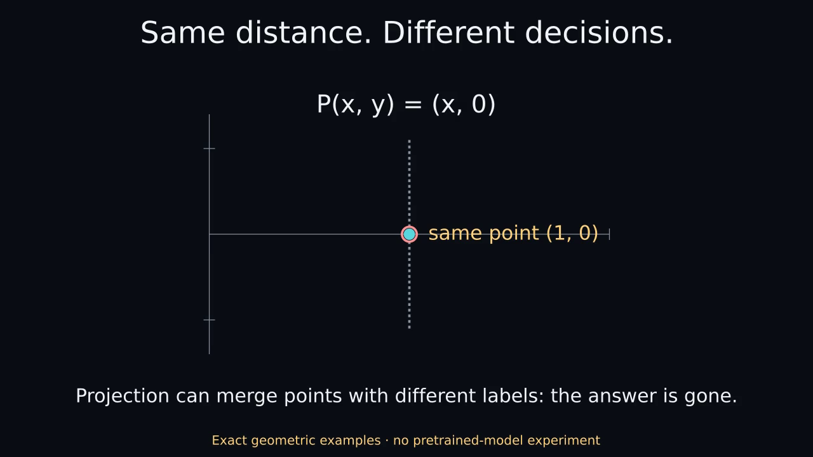

Same distance. Different decisions.
Actual Manim Community 0.22.0. EXACT GEOMETRY ILLUSTRATION · NOT A MODEL EXPERIMENT.
Nothing plays automatically. The static poster and complete transcript are the reduced-motion path.

MP4 · Optional GIF · Static PNG · Text transcript · Captions
Complete transcript
00–08 seconds
Translate both vectors: distance stays fixed, cosine changes.
A=(1,0) and B=(0,1) both move by (2,2), ending at (3,2) and (2,3). Their Euclidean distance remains sqrt(2). Their cosine changes from 0 to 12/13, approximately 0.923. During the motion, distance and cosine are calculated from the current points.
08–16 seconds
A fixed readout can flip B. Compensating its bias is a second edit.
The fixed score x1-0.5 gives A=+0.5, B=-0.5 before translation and A=+2.5, B=+1.5 afterward. B crosses a zero threshold. Changing the bias to -2.5 restores +0.5 and -0.5, but this compensation is an additional operation.
16–24 seconds
Projection can merge differently labeled points: the answer is gone.
The points (1,1), labeled positive y, and (1,-1), labeled negative y, are projected onto x. Both become (1,0). A classifier seeing only that projected point cannot perfectly distinguish these labels. The projection is hand chosen, not fitted PCA. Check pairwise geometry, downstream scores and task labels separately. These exact constructed examples are not results from a pretrained model and do not imply universal success or failure of component removal.